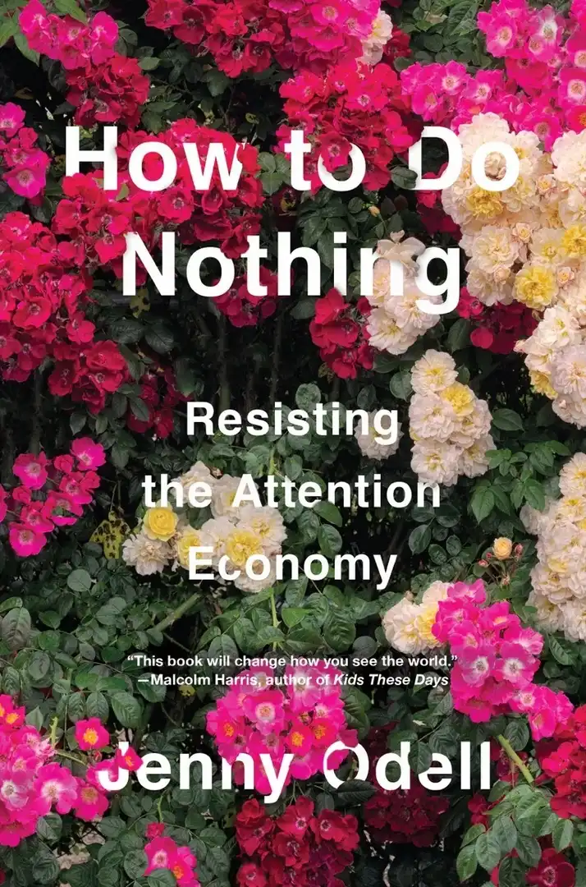

Table of Contents
Audiobooks
 |
Joyful by Ingrid Fetell Lee. It really sparks imagination and motivates to make the world around us more beautiful and joyful. The books explores many different ways to do that, mostly in interior design. I was inspired to take on quite a few creative endeavors by this book. |
|  | How to Do Nothing by Jenny Odell. This one challenges the notions of 'usefullness' and 'productivity'. Useful for whom? Productive for what? Author explores how we could resist capitalism by doing nothing to uphold it and thus living a more meaningful life. She proposes the necessity of missing out. For me it was very therapeutic. |
Series
I only watch animated stuff (especially sucking for 2D), cinema isn't my cuppa tea.
A bit unrelated, but it's so annoying to see the distributors and not the actual creators credited for their hard work?? So you're not gonna see me doing that.
- Bee and Puppycat by Natasha Allegri
- The Owl House by Dana Terrace
- Hazbin Hotel by Vivienne Medrano
- Helluva Boss by Vivienne Medrano
- Fooly Cooly by Kazuya Tsurumaki
- Over the Garden Wall by Patrick McHale
- Kill la Kill by Studio Trigger
- Dead End: Paranormal Park by Hamish Steele
- High Guardian Spice by Raye Rodriguez (yes, I liked it)
- Magical Girl Friendship Squad by Kelsey Stephanides
Movies
- Secret of Kells by Cartoon Saloon
- Song of the Sea by Cartoon Saloon
- Wolfwolkers by Cartoon Saloon
- Luca by Enrico Casarosa
- Son of the White Mare by Román Kunz
- Ron's Gone Wrong by Sarah Smith and Jean-Philippe Vine
- Nimona by ND Stevenson
- White Snake by Amp Wong and Zhao Ji
- Promare by Studio Trigger
Video games
I played quite a lot of games in a vast variety of genres, but usually only 'walking simulators' truly impress me. I love just wandering around. No fighting, no interactions. I can simply appreciate serenity of the surrondings, without my anxious and autistic ass being threatened by anything.
Flower


What's amazes me the most about this game is that it doesn't even have a character. It kinda has 'The World Is Not Ending' vibe (see 'Videos' section in my first Bookmark compilation), and made me more appreciative of, y'know, nature.
Journey

Couldn't really comprehend what the story is about, it's more abstract than, say, ABZÛ that it often gets compared to in terms of the message. But still I felt a catharsis finishing this one. It makes me feel connected to the world around me and that my relationship with it is reciprocal.
Dear Esther

I loved untangling the allegorical story with bits and pieces of visual cues and narration. If you want to spend an evening sobbing (in a good way), this is the one.
Dragon's Dogma

It's an aRPG, but there's some charm to simply walking there along the shore or in the woods. It's long been my special interest, and the message helped me cope in my most difficult times. I ended up questioning that message and some problematic stuff like racism and misogyny, but I can find things to value about this game anyway. Also you can create femboy characters. Yep. That's the most important thing.